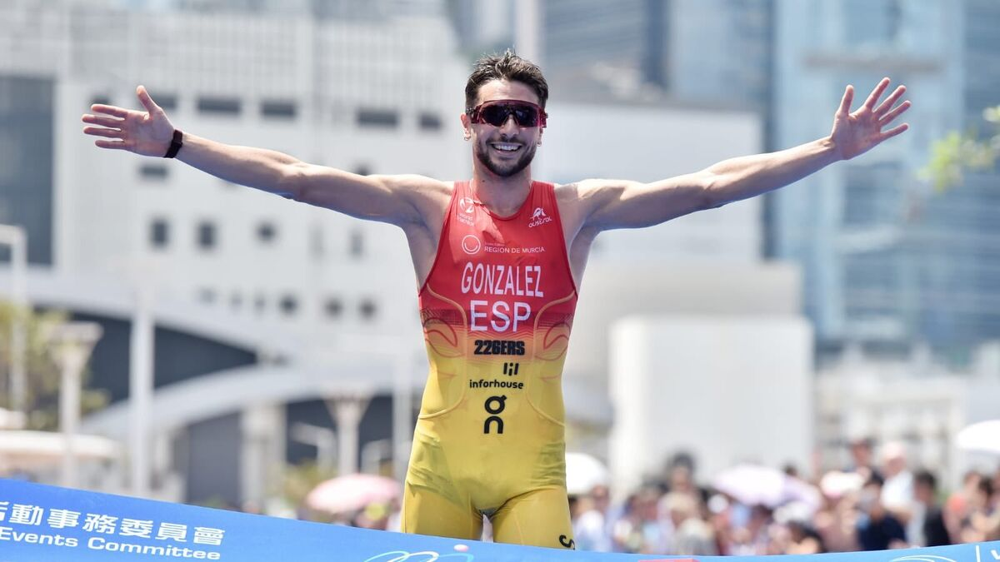

Escrito por Iker Roca | 9 de junio de 2024
El inicio de 2024 ha sido brillante para los deportistas andaluces en el ámbito internacional. Alberto González y Cristina Jiménez-Orta han logrado destacarse en competencias de alta exigencia, dejando en alto el nombre de Andalucía en el escenario deportivo global.
Alberto González, natural de Málaga, se llevó la medalla de oro en el Triatlón Internacional de Hong Kong, una de las competiciones más prestigiosas del circuito asiático. El evento, que tuvo lugar el pasado 15 de enero, reunió a los mejores triatletas del mundo, quienes enfrentaron un recorrido desafiante compuesto por 1.5 km de natación, 40 km de ciclismo y 10 km de carrera a pie.
González, con una impresionante demostración de fuerza y resistencia, completó la prueba en 1 hora, 48 minutos y 23 segundos, superando al segundo lugar por más de un minuto. "Este triunfo es el resultado de años de duro trabajo y dedicación. Estoy muy orgulloso de representar a mi país y llevar esta medalla de oro a casa", declaró emocionado tras cruzar la meta.
Por su parte, Cristina Jiménez-Orta, oriunda de Sevilla, conquistó la medalla de bronce en la Copa Europea de Triatlón celebrada en Quarteira, Portugal, el 22 de febrero. En una competencia que exigió lo mejor de los atletas, Cristina demostró su capacidad para mantenerse entre las mejores, logrando un tiempo de 2 horas, 5 minutos y 37 segundos.
La triatleta sevillana se mostró satisfecha con su desempeño y destacó la importancia de este logro para su carrera. "Este bronce significa mucho para mí. Ha sido un camino difícil, pero con el apoyo de mi equipo y mi familia, he podido llegar hasta aquí. Este es solo el comienzo de lo que espero sea un año lleno de éxitos", comentó Jiménez-Orta.
Estos éxitos marcan un comienzo prometedor para los deportistas andaluces en 2024, quienes no solo buscan destacar en el ámbito internacional, sino también inspirar a las nuevas generaciones de atletas en su región. Tanto Alberto González como Cristina Jiménez-Orta están enfocados en sus próximos desafíos, incluyendo la preparación para los Juegos Olímpicos de París 2024, donde esperan continuar con su racha de éxitos.
La comunidad deportiva de Andalucía celebra estos logros y se prepara para apoyar a sus atletas en los futuros eventos. Los éxitos de González y Jiménez-Orta son un testimonio del talento y la dedicación de los deportistas de la región, quienes continúan dejando una huella indeleble en el deporte internacional.
Las autoridades deportivas y locales de Andalucía no tardaron en expresar su orgullo y felicitaciones. La Consejería de Deportes emitió un comunicado destacando la importancia de estos logros para la región y reafirmando su compromiso de seguir apoyando el desarrollo de los atletas andaluces.
Además, ambos deportistas recibieron numerosas muestras de cariño y felicitaciones a través de las redes sociales. Sus seguidores y compañeros de equipo no escatimaron en elogios, resaltando la perseverancia y el esfuerzo que han llevado a estos destacados resultados.
Con un comienzo de año tan espectacular, las expectativas para el resto de 2024 son altas. Los deportistas andaluces han demostrado que tienen el talento y la determinación necesarios para competir al más alto nivel y seguirán trabajando arduamente para alcanzar nuevas metas y continuar llevando el nombre de Andalucía a lo más alto del deporte mundial.
Referencia: World Triatlon News.